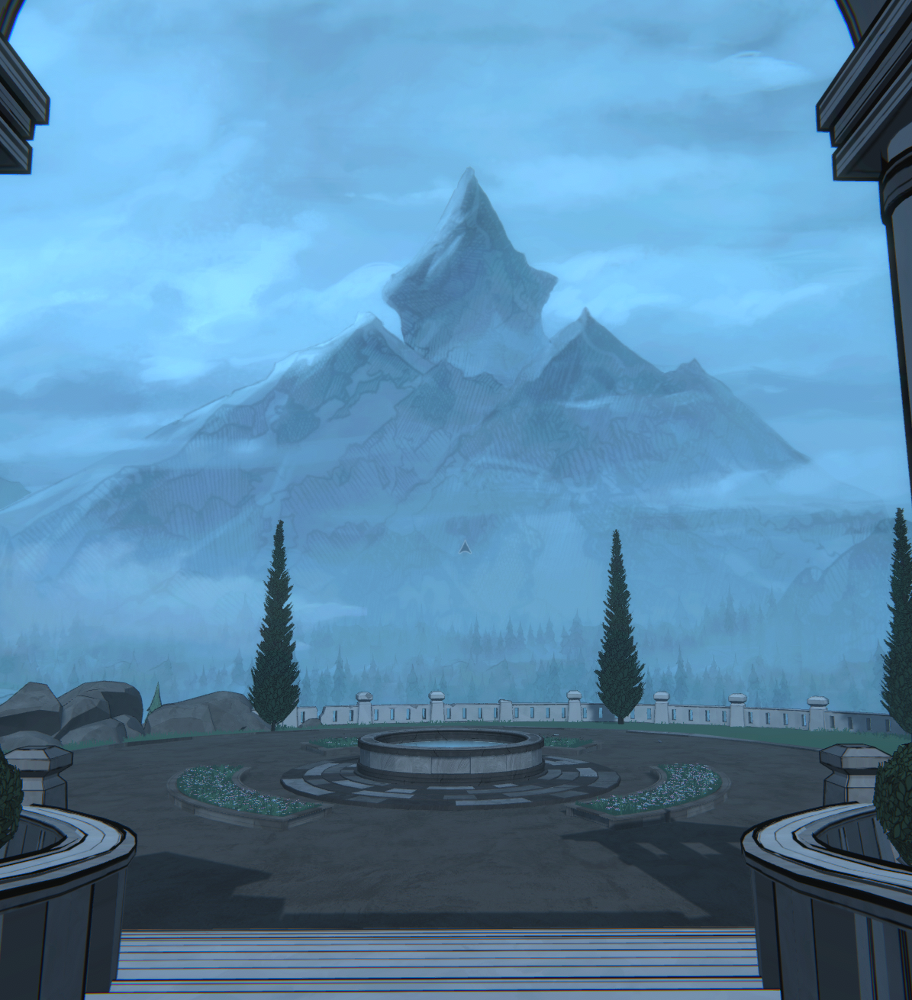

A New Mountain
It's 10:42 PM on May 6th, 2026. And I find myself looking up at the peak of a tall mountain.
That mountain's name is Mount Holly.
It is located in Reddington; the original capital of Fenn Aries, which used to be Orinda Aries. Two of eight realms featured in the video game Blue Prince.
These are all things I have learned while exploring the many rooms, halls, and closets of The Mount Holly Estate.
Two days ago, I decided to get back into this game. (Was it only two days? My god, it feels like it's been at least five.)
I somewhat haphazardly threw myself back into the game, partially documenting what I found, and just kind of letting my ADHD brain tear me through it piece by piece.
I've managed to remember most of the game by now, but there's lots of information, probably vital information, that has slipped through the combined cracks of time and my haphazard attention span.
I want to do this right. I want to properly document and explore this game. So that nothing slips through.
And that means starting over from the beginning and documenting every little detail. About every little thing in every room.
It will be long. It will be tedious. It will be a climb.
It will be exactly the the sort of thing I wanted out of my list of 100 things. To develop a stronger relationship with the process of pointless-feeling tedium in pursuit of a greater journey and goal. To learn patience and resilience. To not let a desire for instant gratification get in the way of a more fulfilling journey. To embrace, rather than avoid, the imposition of time and effort in pursuit of doing a task well, rather than achieving an end result.
And so, I stand here, on the steps of this virtual estate, staring up at the mountain on the first day of a new save. The wind is blowing and the birds are chirping.
Mt. Holly. I will uncover all of the secrets you watch over.